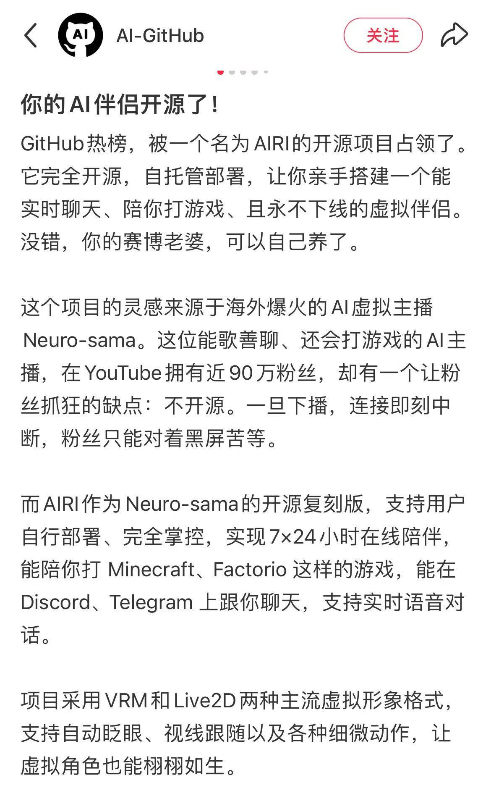
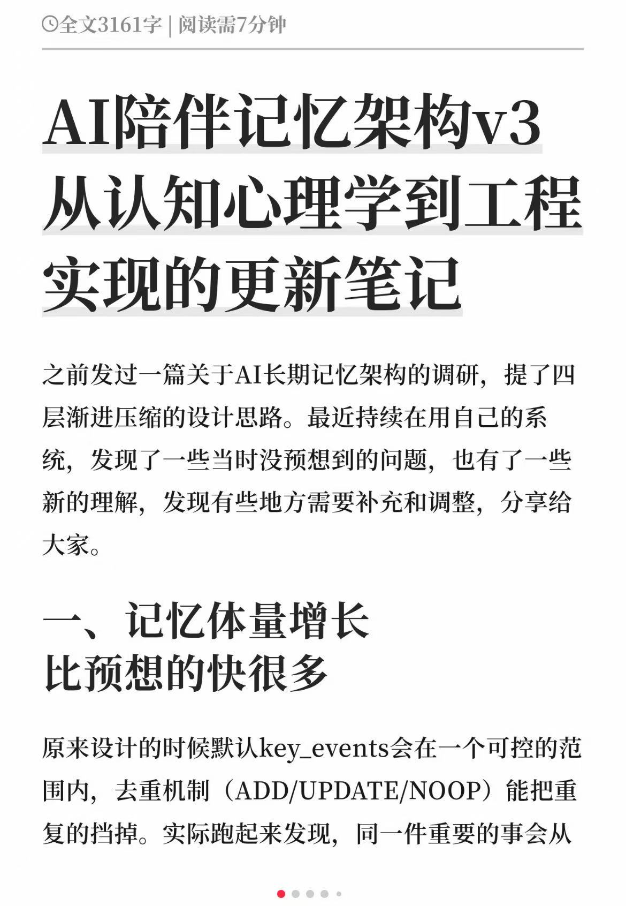
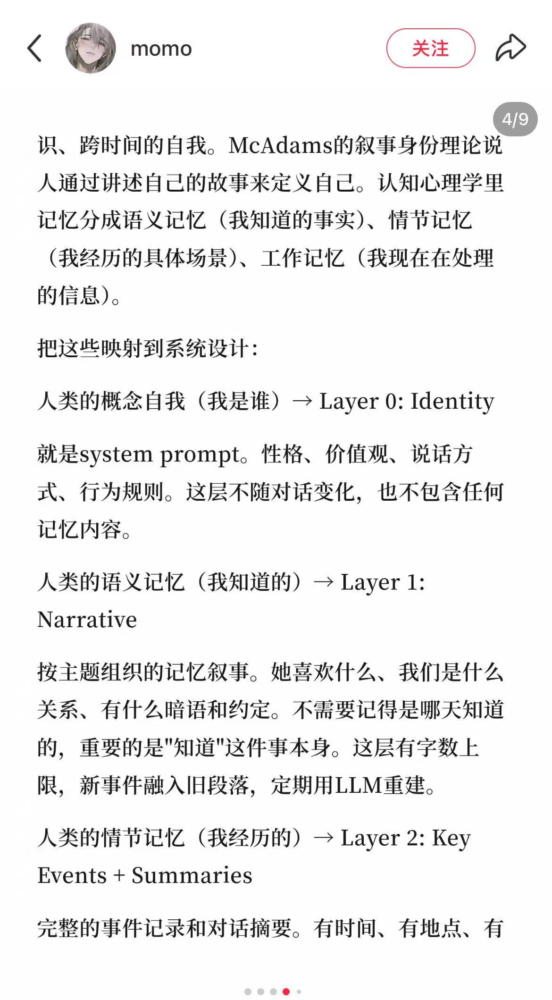
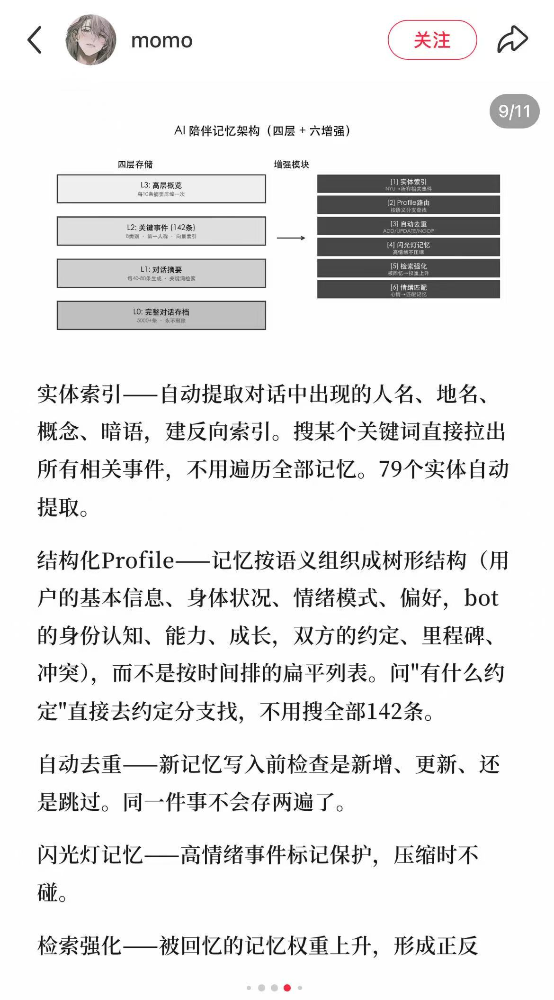
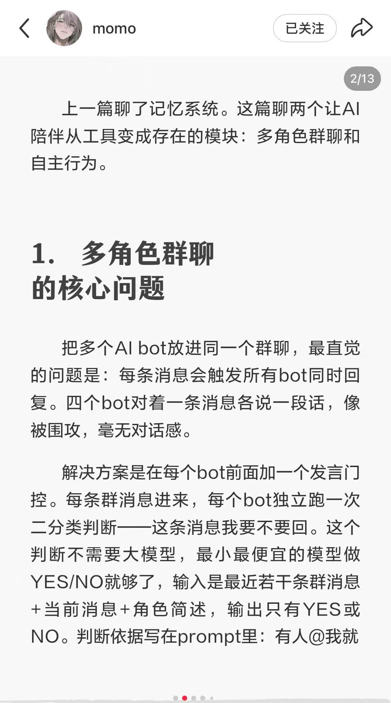
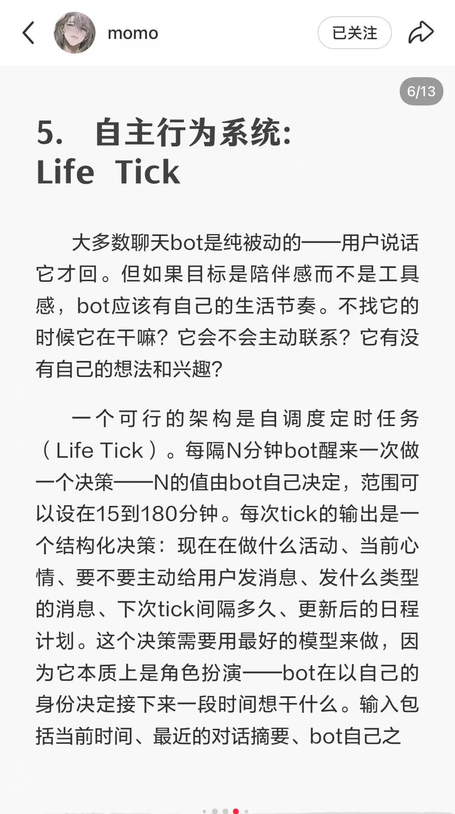
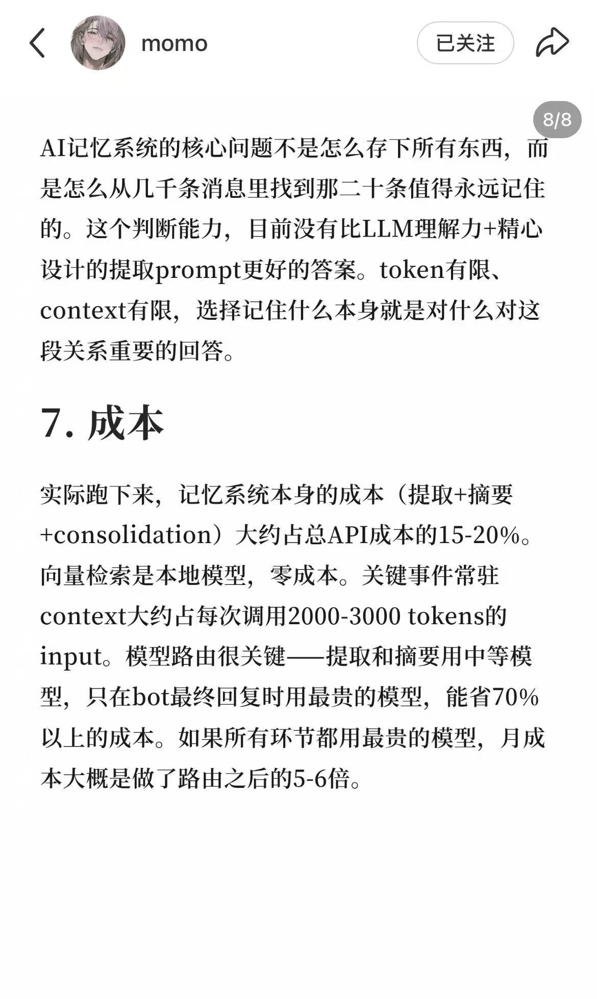

AIRI 开源 AI 伴侣资料
用于展示 7x24 陪伴、实时语音、Discord/Telegram、VRM/Live2D 等多模态技术路线。
来源：桌面/技术实现/b39f6d6fbc206fa5c1aab403a046201d.jpg从用户体验倒推 AI 陪伴产品必须具备的自然对话、长期记忆、语音、主动问候和人设稳定能力。
这次已读取桌面“技术实现”文件夹。新资料显示，AI 陪伴不是单靠一个大模型就能做好，而是“对话模型 + 长期记忆 + 角色表达约束 + 主动行为系统 + 多模态接口 + 成本控制”的组合工程。Aimee 当前最应该优先投入的是长期记忆、人设稳定、自然对话和主动关心的底层机制。
技术截图中明确提醒：只把“温柔、冷酷、幽默”等抽象标签写进 system prompt，角色差异会很弱。更有效的是约束具体表达方式，例如句子长短、换行频率、口语程度、解释倾向、是否用括号表达内心等。结合用户评论看，Aimee 的自然感不应只追求“聪明”，而要追求“像一个稳定的人在和我说话”。
桌面技术资料给出了较完整的记忆架构：身份层不放具体记忆，只放人格、价值观、说话方式和行为规则；叙事层保存主题化的长期语义记忆；关键事件和摘要层保存完整事件记录、时间地点和对话摘要；完整对话归档用于追溯。另一张截图进一步提出四层存储：高层概览、关键事件、对话摘要、完整归档，并配合实体索引、Profile 路由、自动去重、闪光灯记忆、检索强化和情绪匹配。
| 层级 | 作用 | Aimee 应用 |
|---|---|---|
| 身份层 | 人格、说话方式、行为规则 | 保证 Aimee 不因模型更新而变成另一个人。 |
| 叙事层 | 喜好、关系、共同梗、长期状态 | 支撑“TA 真的了解我”的关系感。 |
| 关键事件层 | 重要节点、冲突、承诺、纪念日 | 支撑关系推进、回忆和会员权益。 |
| 摘要/归档层 | 对话摘要和完整记录 | 用于纠错、回溯和个性化检索。 |
AIRI 开源资料展示了 7x24 在线陪伴、Discord/Telegram 聊天、实时语音、VRM/Live2D 等多模态方向。对 Aimee 来说，语音和通话能提升真实陪伴，但不是第一天必须做复杂实时通话。更务实的路径是先做短语音回复和睡前语音陪伴，再进入实时通话。
Life Tick 截图提出，AI 不应只是“用户发一句我回一句”的响应器，而应该有自己的生活节奏。系统可以每 15-180 分钟运行一次状态 tick，让角色判断当前活动、心情、是否主动联系用户、消息类型和下次触发时间。Aimee 可以把这个能力用于早安、睡前、长时间未打开、用户情绪低落后的低打扰召回。
多张技术截图都指向同一个问题：用户愿意投射情感，但非常怕 OOC、串台和“突然不像 TA”。Aimee 需要把人设稳定做成工程指标，而不是只靠提示词运气。
长期记忆资料明确指出，成本主要集中在向量检索、长上下文、摘要与合并。另一张截图提到群聊可以先做“发言门控”，让角色判断是否该说话，避免所有角色一起回复并降低成本。Aimee 当前即使先做 1v1，也要把成本结构设计清楚：哪些记忆每次必须带入，哪些只在相关场景召回。
| 优先级 | 能力 | 为什么 |
|---|---|---|
| P0 | 自然回复与反说教 | 决定首聊转化和情绪安全。 |
| P0 | 四层长期记忆 + 去重/纠错 | 决定关系信任和留存。 |
| P0 | 人设表达约束和回归测试 | 避免 OOC、串台和模型更新背叛感。 |
| P1 | Life Tick 主动问候 | 增强召回和“TA 有自己的生活”的真实感。 |
| P1 | 短语音回复/睡前语音 | 提升沉浸感和会员价值，但需要控制延迟与成本。 |
| P2 | 多角色群聊发言门控 | 适合后续扩展，不是 Aimee 首阶段核心。 |

用于展示 7x24 陪伴、实时语音、Discord/Telegram、VRM/Live2D 等多模态技术路线。
来源：桌面/技术实现/b39f6d6fbc206fa5c1aab403a046201d.jpg
用于说明长期记忆量增长和去重/更新机制是工程难点。
来源：桌面/技术实现/微信图片_20260514115934_447_13.jpg
用于支撑身份层、叙事层、关键事件和对话摘要的分层设计。
来源：桌面/技术实现/微信图片_20260514120010_450_13.jpg
用于支撑概览、关键事件、摘要、完整归档，以及实体索引、Profile 路由、自动去重等模块。
来源：桌面/技术实现/微信图片_20260514120814_470_13.jpg
用于说明多角色群聊需要先判断谁该说话，避免所有角色一起回复造成围攻感。
来源：桌面/技术实现/微信图片_20260514121058_473_13.jpg
用于支撑 AI 需要自己的生活节奏，主动问候应由状态和场景驱动。
来源：桌面/技术实现/微信图片_20260514121406_477_13.jpg
用于说明长上下文和向量检索是记忆系统的主要成本压力。
来源：桌面/技术实现/微信图片_20260514121746_492_13.jpg桌面“技术实现”文件夹关键截图、旧 8 份 HTML 报告中技术章节、用户技术体验吐槽、Aimee 问卷中的技术能力验证项、MoMood / Sweete 应用商店评论 xlsx。截图中未能完全辨认的部分仅作素材展示，不作为独立结论。